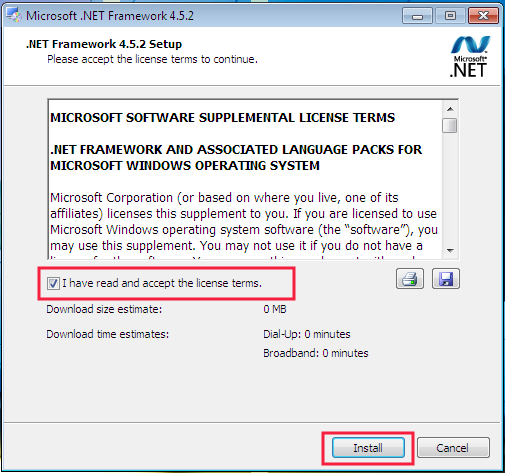
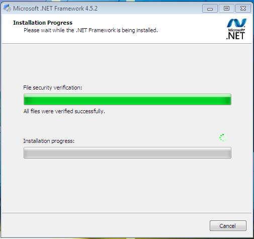
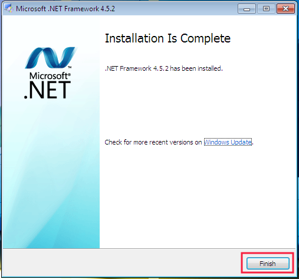

Install Runtime .NET Framework 4.5
Pada tanggal 4 Juli 2020 telah dirilis OtomaX v4.0.0 serta terdapat perubahan runtime menjadi menggunakan .NET Framework 4.5 atau lebih tinggi. Hal ini berpengaruh pada tidak bekerjanya OtomaX v4.0.0 manakala di Sistem Operasi yang Anda gunakan belum terinstall runtime versi tersebut.
Apasih yang baru di OtomaX v4.0.0?, diantaranya OtomaX edisi Standard dan Pro yang di versi sebelumnya belum dapat menikmati fitur Tiket Deposit di versi ini dapat menikmatinya; Sistem Unit di OtomaX edisi Ultimate dimana di versi lama belum tersedia, dan masih banyak lagi. Untuk mengetahui lebih lengkap terkait fitur terbarunya kami rekomendasikan untuk klik disini dan disini.
Setelah melihat fitur terbaru mungkin Anda tertarik membeli OtomaX atau menambah lagi, untuk membeli OtomaX silahkan klik disini; jika ingin upgrade OtomaX agar bisa menikmati fitur terbaru bisa klik disini; dan jika ingin membayar iuran tahunan OtomaX bisa klik disini.
Menginstall runtime .NET Framework 4.5 seperti berikut ini langkah - langkahnya:
- Download Microsoft .Net Framework sesuai Sistem Operasi yang Anda gunakan, klik disini.
- Cari file Microsoft .Net Framework yang sudah Anda download.
-
Klik 2x pada file Microsoft .Net Framework, akan muncul jendela seperti di bawah pilih I have read and accept the license terms. Kemudian klik Install.

-
Tunggu proses verifikasi data

-
Jika muncul popup seperti di bawah ini klik YES

-
Tunggu proses instalasi

- Instalasi sukses, klik Finish.

Setelah instalasi runtime usai, Anda dapat melakukan update OtomaX v4.0.0 klik disini serta menikmati fitur - fitur terbarunya. Jika punya pertanyaan bisa Anda kirimkan ke email support@otomax-software.com.